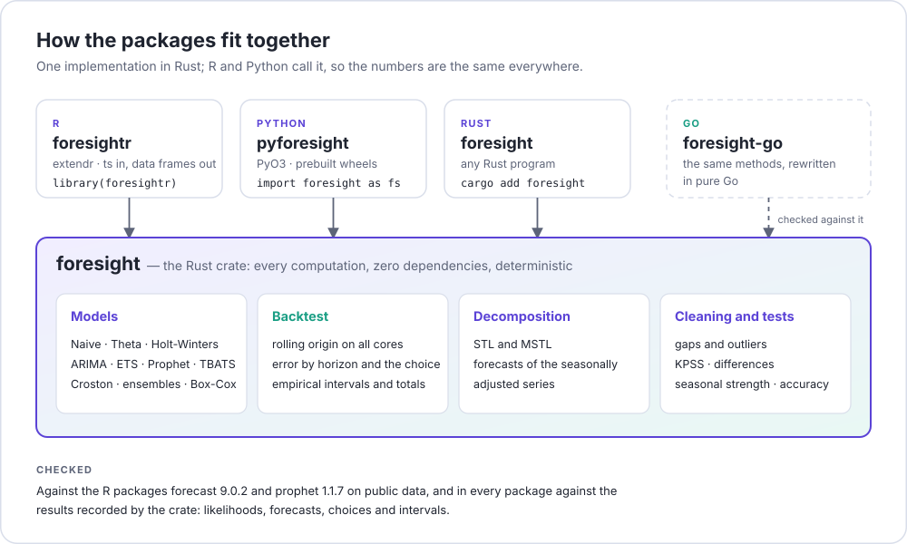
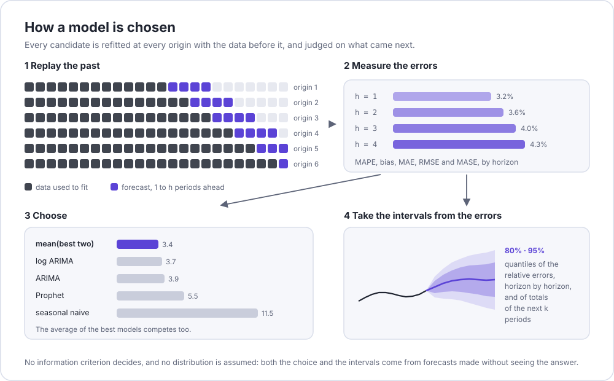

Time series forecasting in R that picks its model by what would have worked.
foresightr fits several models to a series, replays the past to see how each would have done, chooses by out-of-sample error and reports intervals taken from the errors actually observed, including intervals for the total of the next k periods.
The models, the backtest and the utilities are the Rust crate foresight, compiled into the package: the numbers are the crate’s and the backtest runs on all cores. Charts are drawn with ggplot2, the only dependency beyond base R.

Website: https://strategicprojects.github.io/foresightr/ · Português
Installation
# install.packages("remotes")
remotes::install_github("StrategicProjects/foresightr")Installing from source compiles the Rust code, so it needs a Rust toolchain (https://rustup.rs); on Windows, also the GNU target: rustup target add x86_64-pc-windows-gnu.
Use
library(foresightr)
# replay the last 36 months, 12 months ahead, with 11 models
bt <- backtest(AirPassengers)
bt # the ranking and the choice
bt$forecast # the forecast with 80% and 95% intervals
total_forecast(bt, 6) # the total of the next six months, with its own interval
autoplot(bt) # a ggplot: history, forecast and intervals
autoplot(bt, "accuracy") # the error of the best candidates by horizonA ts brings its seasonal period and the season of its first observation; a plain vector needs period =.
One model on its own:
fit <- fit_model(model_log(model_airline()), AirPassengers)
predict(fit, h = 12)
auto <- fit_model(model_auto_arima(), log(AirPassengers))
auto$details$order; auto$details$seasonal_order; auto$aiccA trend that bends, with dated events (positions from 1 at the first observation, future ones included):
model <- model_prophet(events = list(campaign = c(11, 35, 59, 83, 107, 131)),
steps = list(new_law = 81))Several models combined, and the wider set of candidates:
backtest(y, c(candidates_thorough(),
list(with_name(model_ensemble(candidates_default(), weighting = "stacked"),
"my_ensemble"))))What is in it
| Piece | What it does |
|---|---|
| Models |
model_mean(), model_naive(), model_drift(), model_seasonal_naive(), model_theta(), model_holt_winters(), model_log_linear() (optionally deflated by a price index), model_arima() and model_airline() (seasonal, exact maximum likelihood, optionally with regressors), model_auto_arima(), model_ets(), model_auto_ets(), model_prophet() (changepoints, Fourier seasonality, events and steps), model_tbats() (several seasonal periods, not necessarily whole numbers), model_croston() (with SBA and TSB) |
| Combinators |
model_log(), model_box_cox() (λ fixed or by Guerrero’s method), model_decomposed() (any model on the seasonally adjusted series), model_ensemble() (average, median, inverse error or stacked weights), with_name()
|
| Candidates |
candidates_default() (11 models), candidates_thorough() (18) |
| Fitting |
fit_model(), predict(), forecast_model()
|
| Backtest |
backtest(): rolling origin (expanding or fixed window) on all cores; MAPE, MAE, RMSE, MASE and bias by horizon; average of the best models; choice by out-of-sample error; empirical intervals by horizon and for totals (total_forecast()) |
| Decomposition |
decompose_stl(), decompose_mstl()
|
| Cleaning |
fill_gaps(), find_outliers(), clean_series()
|
| Tests and measures |
kpss_statistic(), n_differences(), n_seasonal_differences(), seasonal_strength(), autocorrelations(), box_cox(), inv_box_cox(), guerrero_lambda(), mape(), pct_bias(), mae(), rmse(), mase()
|
| Regressors |
fourier_terms(), seasonal_dummies(), or any columns of your own |
| Charts |
autoplot() / plot() of a backtest (forecast, accuracy by horizon, ranking) or a decomposition, as ggplot objects; theme_foresight()
|
How it differs from the usual toolkits

Most forecasting packages choose a model by an in-sample information criterion and derive intervals from distributional assumptions. Here the choice and the intervals both come from forecasts made without seeing the future they are judged against. The interval for a total (say, the rest of a fiscal year) is measured on totals, because adding up monthly limits overstates its uncertainty.
Checked
The package runs the Rust crate, so its numbers are the crate’s; the tests check that nothing is lost on the way, against results recorded by the crate: ARIMA, regression with ARIMA errors, ETS, Prophet, TBATS, STL and MSTL, Croston, cleaning, ensembles, tests of stationarity and seasonality, and the backtests of 11 and 18 candidates on three public series. decompose_stl() is also compared with stats::stl(). The crate itself is compared with the R packages forecast 9.0.2 and prophet 1.1.7; the same methods are available in Python (pyforesight) and Go (foresight-go).
Data
inst/extdata/piaui_revenue.csv has the monthly ICMS and FPE revenue of the state of Piauí, Brazil (Siconfi/STN, with the IPCA price index from the Central Bank of Brazil):
read.csv(system.file("extdata", "piaui_revenue.csv", package = "foresightr"), comment.char = "#")